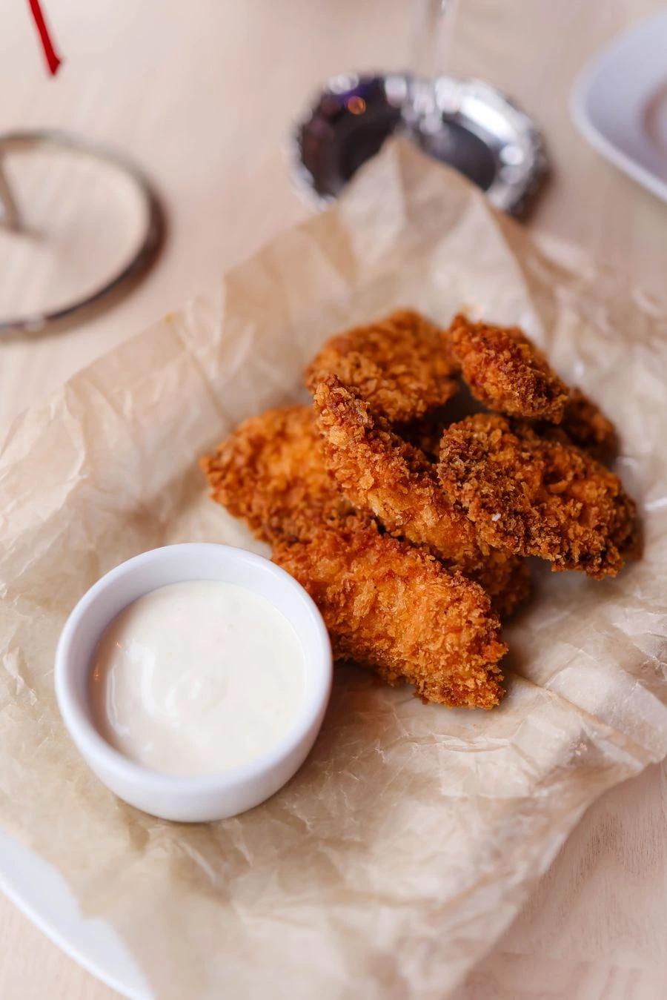

Pizza

Pizza MargheritaPreferata casei
28 leiMozzarella, sos de roșii și busuioc.
Pizza Capriciosa
33 leiȘuncă, mozzarella, ciuperci, măsline și sos de roșii.
Quattro Formaggi
33 leiMozzarella, parmezan, gorgonzola și emmentaler.
Quattro Stagioni
33 leiMozzarella, salam, șuncă, ciuperci, măsline și sos de roșii.
Pizza cu ton
33 leiTon, ceapă și sos de roșii.
Pizza Diavola
33 leiSalam picant, mozzarella și sos de roșii.
Prosciutto Crudo
33 leiȘuncă, mozzarella, parmezan, rucola și sos de roșii.
Pizza Hawai
33 leiAnanas, șuncă, mozzarella și sos de roșii.
Fabi Deluxe
35 leiMozzarella, salam, șuncă, cârnăciori, bacon, ciuperci, măsline și porumb.
Pizza vegetariană
33 leiMozzarella, ciuperci, ardei, măsline, porumb și sos de roșii.
Pizza cu piept de puiPreferata casei
33 leiPiept de pui, mozzarella și sos de roșii.
Burgeri
Royal Burger
30 leiBurger de vită servit cu cartofi și sos.

Burger pui
18 leiPui, cheddar, salată și roșii. Servit cu cartofi și sos.
Burger în cheddarPreferata casei
40 leiCarne de vită, cheddar, cartofi și sos.

Preparate calde
Șnițel XXL
30 leiȘnițel de pui cu salată de varză, cartofi și sos.
Shaorma
30 leiShaorma în lipie, cu cartofi și sos.
Shaorma la farfurie
35 leiCarne de pui cu cartofi, salată, sos și chiflă.

Crispy de pui
29 leiCrispy de pui cu cartofi și sos.
Turte
Turtă cu șuncă
15 leiCu mozzarella și șuncă.
Turtă cu pui
15 leiCu mozzarella și piept de pui.